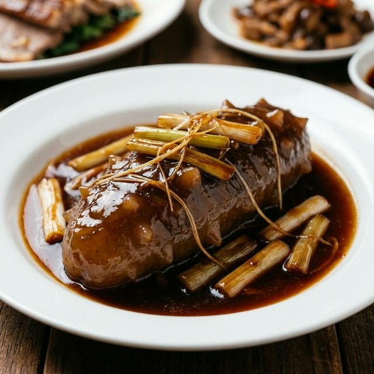

食材准备
- 主料： 水发海参 4-6只
- 配料： 大葱白 2-3根
- 调料： 浓缩鸡汁、耗油 适量
- 调料： 生抽、老抽 适量
- 调料： 冰糖、盐 少许
- 调料： 料酒、淀粉 适量
- 油类： 猪油或玉米油
烹饪步骤
处理海参
水发海参刷洗干净，根据大小对半切开或保持整只。入沸水加入少许料酒焯水1分钟，捞出沥干。
熬制葱油
大葱白切成长段。锅中放油烧热，下入葱段中小火慢慢炸至金黄酥脆，捞出葱段备用，葱油留用。
调制汤汁
锅留适量葱油，加入冰糖炒化，放入生抽、老抽、耗油、鸡汁，加入半碗清汤或水。
煨烧海参
下入海参，小火煨煮3-5分钟，让海参充分吸收汤汁和葱香味。海参质地变得Q弹柔滑。
收汁出锅
放入之前炸好的金黄葱段，淋入水淀粉勾芡，使汤汁浓稠发亮裹住海参。最后淋上一勺亮油，装盘即可。